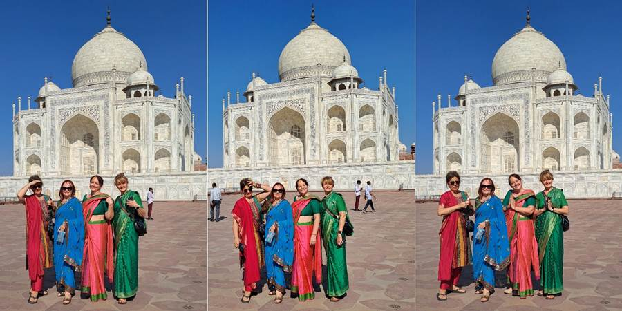
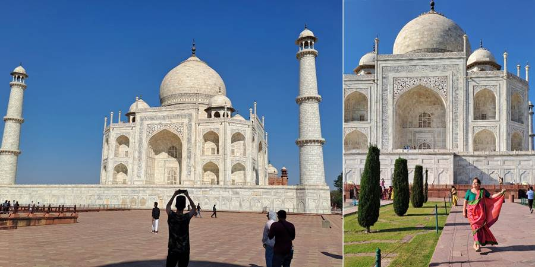
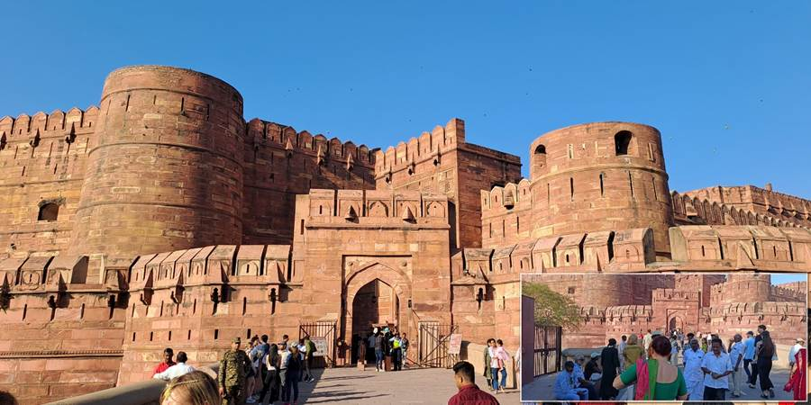
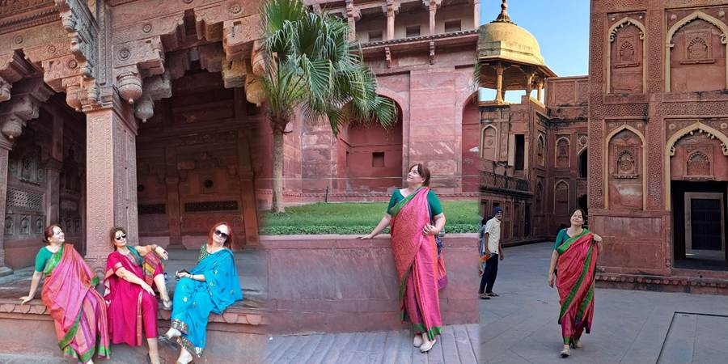
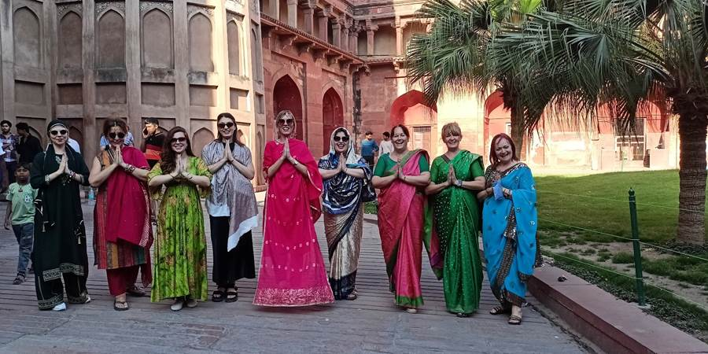
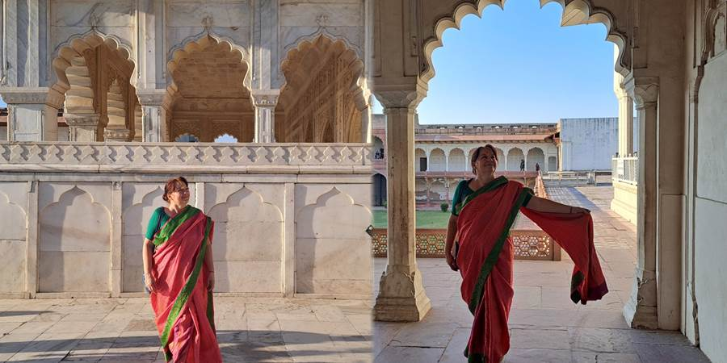
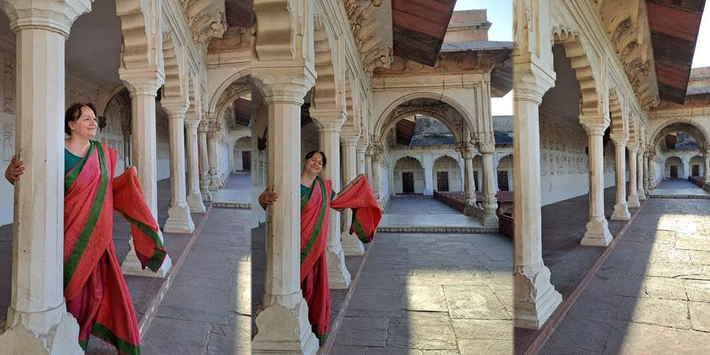
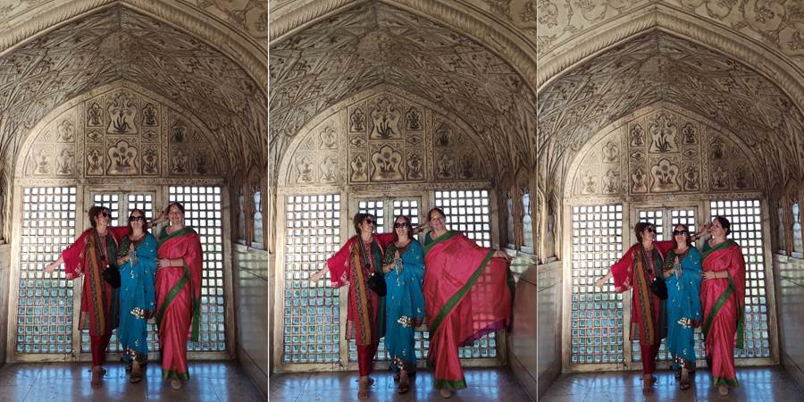
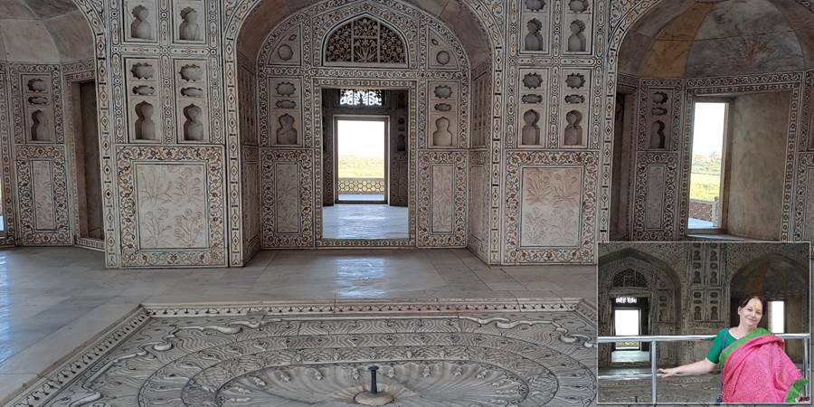

Osmi dan, Agra: susret sa Tadž Mahalom – večnim simbolom ljubavi
Neverovatno je da je svaki dan bilo sve više uzdaha i oduševljavanja.
Osmi dan i dan za njegovo veličanstvo Tadž Mahal.
Stigli u Agru, kratka pauza. Spremanje navrat-nanos. Oblači sarije, šminkaj se, stavi tiku na čelo i pravac Tadž Mahal.
Prolazimo ogromnu kapiju i ukazuje se Tadž Mahal. Jeste prekrasan. Jeste poseban trenutak dok se iščekuje da se pojavi i bude Aah.
Vodič priča: mogulski car Šah Džahan digao je mauzolej svojoj omiljenoj ženi Mumtaz Mahal, koja je umrla na porođaju rađajući njihovo 14. dete.
Gradilo ga je 20000 radnika, 20 godina u 17. veku. Hteo je i sebi da digne crni. Sin ga svrgnuo sa vlasti i smestio u tvrđavu pored, sa koje je imao pogled na Tadž Mahal.
Dosta sam čula. Odoh ja. Jednom u životu sam tu. Dobili smo sat vremena. Bukvalno smo optrčali.
Unutra je isto lep. Na belom mermeru cvetići od dragog kamenja. Svetli nam čuvar bater lampom. Sija se rubin. Naravno, ne sme da se slika.
Ali ispred sme. Slikaj u svim pozama za sve pare. Nismo imali svoje vreme samo da sedimo i budemo, mirno.
I tako ja odlučim da ću ga sutra pri izlasku sunca kao pravi travel bloger ponovo posetiti.
 Posle Tadža poseta tvrđavi od crvenog kamena gde je mogulskog cara Šah Džahan zarobio sin i odakle je Šah posmatrao grob svoje drage.
     Ovo su prostorije u kojima je boravio mogulski car Šah Džahan i gledao u Tadž.
Uveče smo bili u restoranu koji se zove Molekul. Ima DiDžeja koji pušta muziku. Masa se primi i ozbiljno igra. Mlati se kosama, ima raznih koreografija. Ima i Majkl Džeksona. Opšte ludilo. Tu smo se iskakali.
Čak su pustili po želji mladih i jednu našu pesmu. Valjda Stoju.
I tako ti mi na kraj sveta u nekom Molekulu u Indiji skačemo i pevamo narodnjak: “...Da ti se ne žuuri...”. Da me Duško vidi kako skačem uz narodnjak.
Ne propustite sledeću avanturu!
Kad Sandra krene u novi kraj sveta, vaš inbox prvi sazna. Prijavite se i stižu vam sve nove priče mejlom.